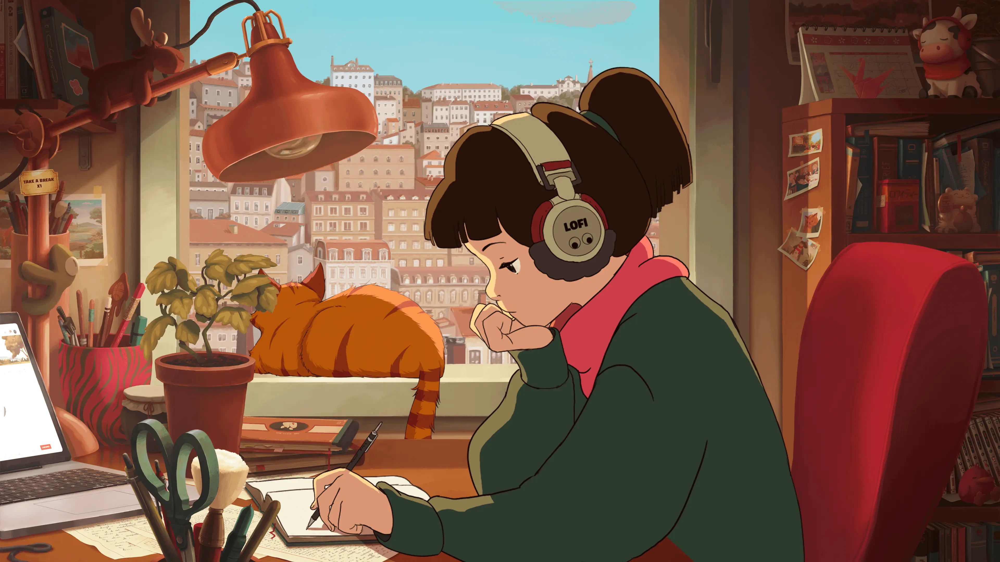

Welcome
Welcome to the Creative Coders Art Resources website. Explore resources and discover art and culture from different places
Explore Art
The Met Collection
Explore artwork from different cultures and time periods through the
Metropolitan Museum of Art's online collection. Search for artists,
paintings, sculptures, and more.

Explore Music
Lofi Girl
Explore calming music created by a plethora of talented people
with a wide range of themes and instraments like jazz, synthwave,
classical, halloween, summer, bosa, ambient, and more!

Learn to Draw
Drawabox
Practice drawing fundamentals with free, step-by-step lessons. Exercises focus on building confident lines, understanding perspective, and constructing three-dimensional forms.